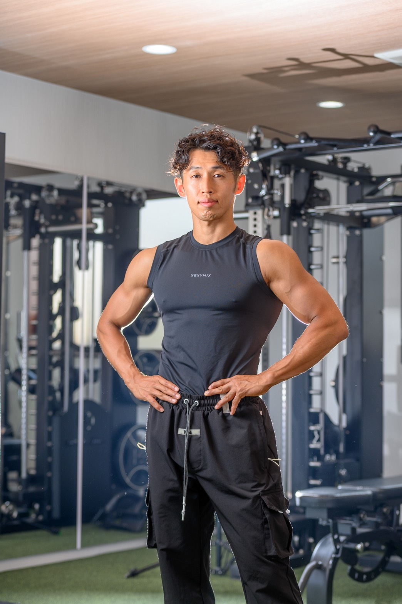

Instructors
講師紹介
徒手と再教育、二つの専門性が交差する。

徒手・評価・現場改善
TOTAL BODY FITNESS THEORY 代表
原口 慶篤
専門学校卒業後、鍼灸整骨院に就職しトレーナー・整体師として活動。さらに学びを深めるため2019年に鍼灸専門学校に再入学。2020年に独立し、コンディショニングを武器にHP無し広告無し口コミ紹介のみでリピート客が後を絶たない。異色の経歴と独自に編み出した技術で様々な身体の問題を解決する。
専門分野
関節包リリース
筋膜リリース
バイオメカニクス評価
コンディショニング手技
特徴
骨運動学に基づいた精密な評価と即効性のある手技技術。特に股関節と足関節の改善に高い効果を発揮。

再教育・運動指導・バイオメカニクス
パーソナルジム NIM 代表
吉田 憲治
海外での解剖実習を通じて培った解剖学知識と、神経アプローチ・バイオメカニクスの専門性を武器に、機能改善やパフォーマンス向上、ボディメイクの理論と実践を指導。トレーニングにタイ古式マッサージやピラティスの要素を組み込み、効果的かつ理論的な指導法を行っている。
取得資格
NESTA-PFT資格
タイ政府認定タイ古式マッサージ師
PHIピラティスインストラクター
2ndPASS認定トレーナー
実績
2023・2024年 人体解剖実習参加（チェンマイ大学）
2020年 全国クラブラグビー大会出場
2025年 JBBF 中四国フィジーク選手権 5位